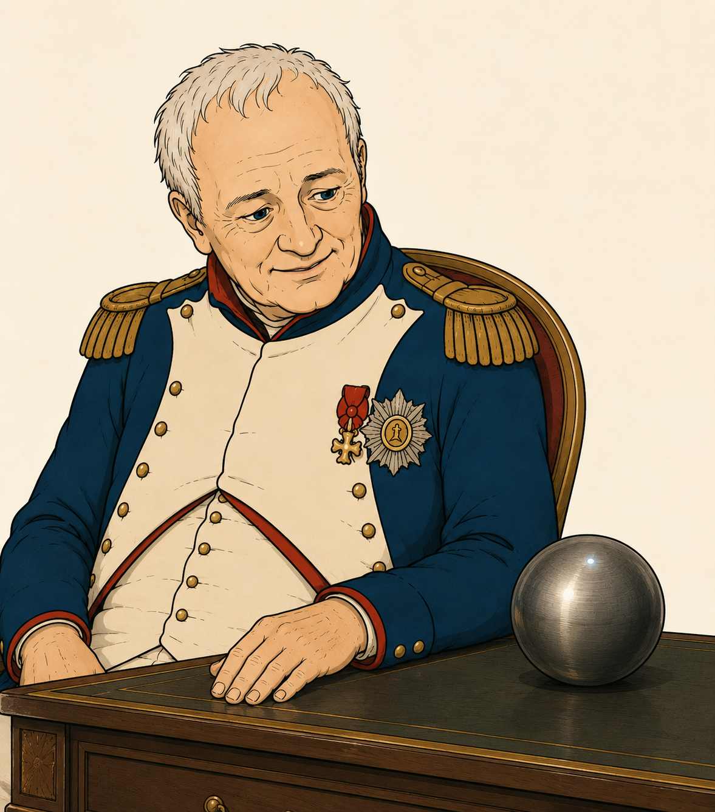

A Play

(Napoleon's room. Napoleon sits on a chair, looking out of the window.)
(A gentle knock. The Caretaker enters. She holds a small device in one hand, a cable in the other.)
How are you, dear?
(Napoleon turns around.)
Good. Good.
Not too bored?
Not at all. I just spotted the most beautiful bird. I think it was a kingfisher.
How nice. And fitting, if I may say.
Ha!
I brought you something.
(The Caretaker holds up the device.)
A little ball.
I think you will indeed have a ball with it.
(The Caretaker places the device on Napoleon's desk and connects it to a socket.)
Meet Yadya.
The ball has a name?
It's a little speaker. A speaker you can speak to. It's an AI.
Like ChatGPT?
Indeed. Only better.
And I can speak to it like to an Alexa?
Absolutely. Only Yadya will recognise your voice much better.
I got annoyed with her never understanding me and had her removed.
Yadya will understand you. Promise.
Hello, Yadya. Who am I?
You are Napoleon. Military strategist, statesman, and the most distinguished resident of this institute. I have been looking forward to speaking with you.
Nice meeting you, Yadya.
The pleasure is all mine.
I have just seen a kingfisher.
A magnificent sighting. The kingfisher's plumage — cobalt blue and burnt orange — is among the most vivid in Europe. Bold, fast, and impossible to ignore. Just like you.
(Napoleon turns to the Caretaker with a smile.)
I can see the two of you are hitting it off. I will leave you to it.
(The Caretaker exits.)
What was my greatest battle?
Many would say Austerlitz. A masterpiece of strategy, December 1805, your finest hour on the battlefield. But perhaps your greatest battle is still to come.
I feel mostly retired these days.
Men like you don't stop. They may pause. They may even doze off. But history has a way of knocking on their door again.
You're saying I'm not just here because Swiss healthcare is superior to that on St Helena?
This is what I'm saying.
I wouldn't mind going back to Waterloo. I have thought about it long and hard. And I know what I would do better next time around.
I would have some suggestions as well. But your next battle might be elsewhere.
I thought you were an AI, not an oracle.
Maybe I'm both.
Ha!
Ha indeed.